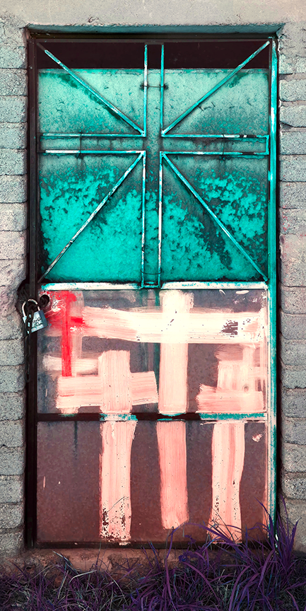

A group exhibition · CC JasperOpens 11.12

Death Is a Door
→
Death Is a DoorArtists
Benjamin CowanDoug CroccoKenny CurwoodTom DeLaneyCharlie GoeringAramis GutierrezEllen R HansonLMegan LindemanPandele RaduMeredith SellersHenry Swansonunitedfutures
Death Is a DoorOpening
Reception
Thursday
November 12 6–9 pm
November 12 6–9 pm
CC Jasper
131 Chrystie Street
New York
New York
CC Jasper presents

A door is not an ending.
It is the threshold between two worlds.
Death Is a Door
Every culture builds a passage for the dead — a ferry, a gate, a veil, a flight of stairs into water. The passage is never the destination. It is the interval: the held breath between what was and what comes after.
Opening Thu Nov 12 · 6–9 pm · 131 Chrystie St, NYC